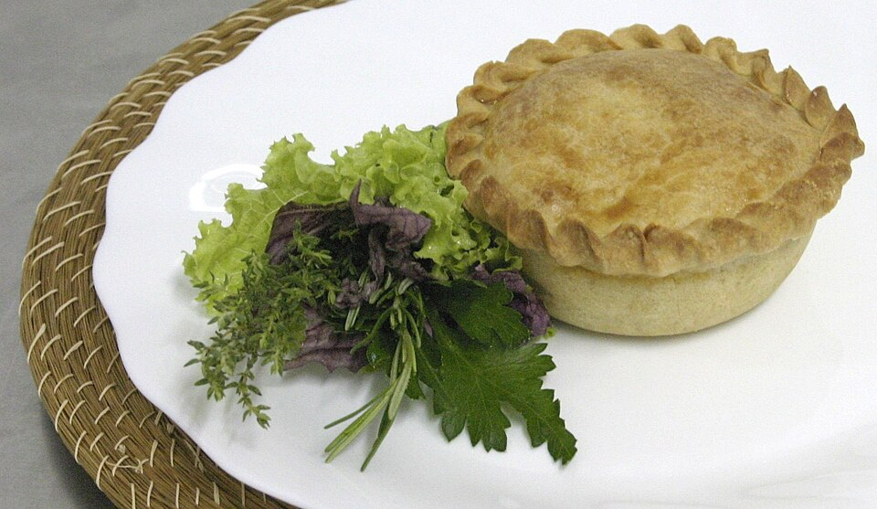

Tortas salgadas
Torta de frango

Ingredientes
- ½ kg de frango
- 2 xícaras de mozarela ralada
- 1 ¾ xícara de leite
- 1 cebola picada
- 2 colheres (chá) de orégano
- 1 kg de batatas
- 6 colheres (sopa) de manteiga
- ⅓ xícara de leite (para o purê)
- 5 colheres (sopa) de salsa picada
- 2 cenouras raladas grosso e cozidas
- 2 colheres (sopa) de cebolinha verde picada
- 2 colheres (sopa) de maionese
- 3 colheres (sopa) de farinha de trigo
- 1 colher (sopa) de purê de tomate
- 1 gema
Modo de preparo
- Cozinhe o frango e desfie. Ponha num prato raso e junte o queijo, o leite, a cebola e o orégano. Cubra e leve à geladeira para marinar.
- Enquanto isso, descasque as batatas, corte em cubos e cozinhe numa panela com água e sal.
- Escorra as batatas, passe pelo espremedor e ponha numa tigela. Junte 4 colheres (sopa) de manteiga e o leite, e misture bem até obter um purê. Tempere com sal a gosto, junte a salsa e misture bem. Reserve.
- Numa tigela, escorra o líquido onde o frango ficou marinando e reserve. Em outra tigela, ponha o frango desfiado, a cenoura, a cebolinha e a maionese. Verifique o tempero e misture bem.
- Numa frigideira, derreta a manteiga restante. Polvilhe a farinha por cima e doure ligeiramente.
- Retire do fogo e junte aos poucos o líquido onde o frango ficou marinando, mexendo sempre. Leve ao fogo novamente, junte o purê de tomate e cozinhe até o molho engrossar.
- Junte o molho à mistura de frango.
- Ponha a mistura de frango numa fôrma refratária com capacidade de 2 litros, cubra com o purê de batata e decore a superfície fazendo sulcos com os dentes de um garfo.
- Numa tigelinha, utilizando um garfo, bata a gema com 2 colheres (sopa) de água. Pincele a superfície da torta com essa mistura.
- Leve ao forno preaquecido em temperatura alta (200 °C) para assar por cerca de 50 minutos, até dourar. Deixe esfriar e congele.
Observação
Se quiser congelar a torta crua, deixe para pincelar a superfície com a gema batida depois de descongelar. Congelamento: embale a fôrma refratária com a torta em filme plástico, ou num saco plástico que feche hermeticamente; etiquete e congele. Descongelamento: de um dia para o outro na geladeira; retire o filme e leve ao forno coberta com papel-alumínio para aquecer.